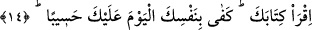

“Kıyâmet günü” yeniden dirilme ve hesap günü “onun için” yâni her insan için
dürüldükten sonra “açılmış olarak bulacağı” ve göreceği, küçük ve büyük her amelinin
yazıldığı “bir kitap çıkarırız.”
Hasan Basrî (rh.a.) der ki: “Bunun mânâsı şudur: Senin önüne bir sahife serilir ve iki
de melek tayin edilir. Bunlar insanın sağ ve sol tarafındaki meleklerdir. Sağındaki melek
iyiliklerini, solundaki melek kötülüklerini yazar. Nihâyet ölünce kıyâmet gününde
çıkarılana kadar sahifen dürülüp beraberinde kabre konur.”
Yâni insan sekerât hâline gelince amel defterini dürerler. Tekrar diriltilince tekrar onu
açarlar ve insanın eline verirler.
14. “Kitabını oku, bugün nefsin sana hesapçı olarak yeter (denilir).
“Kitabını oku,” Katâde’nin şöyle dediği nakledilir: Dünyada okuma bilmeyen de o
gün okur.
“Bugün nefsin sana hesapçı olarak yeter.” denilir. Yâni kendine bak ki ne yapmışsın
ve ne tür bir karşılığa müstehaksın. Allah Teâlâ kulunun hesâbını, yine kendisine havâle
etmiştir. Bu O’nun zulme nisbet edilmemesi ve kulun günahını îtirafının kendi aleyhine
delil olması içindir.
Hasan Basrî (rh.a.): “Sana insafla muâmele edene sen de insafla muâmele et! Seni
nefsinin muhâsibi yapana sen de insaflı ol.” demiştir.
Hz. Ömer (r.a.): “Hesaba çekilmeden önce kendinizi hesaba çekiniz.” buyurmuştur.
Bugün kendi amel defterini önüne koy. İyi ve kötü ne yapmışsan bak. Elinde fırsat
varken durumunu düzeltmeye çalış. Yoksa yarın durumunu düzeltemezsin.
Keşfü’l-esrâr’da şöyle anlatılır: Bir baba oğluna: “Bugün insanlara ne söylersen,
onlardan ne işitirsen ve ne iş yaparsan bana söyle. Yapıp ettiklerini ve yapmadıklarını
bana arz et.” dedi. Oğlu akşam namazına kadar bir günde bütün yapıp ettiklerini
babasına arz etti. Ertesi gün babası oğlundan yine bir günlük durumunu sordu. Oğlu:
“Babacığım, başka zahmetli ve meşakkatli işleri emret, razıyım. Yeter ki her gün bana
ne yapıp ettiğimi sormaktan vazgeç. Ben buna güç yetiremiyorum.” dedi. Babası: “Ben
seni bu işe mecbur ettim ki uyanasın, akıllı olasın ve hesab yerinden gafil olmayasın.
Madem ki bir günlük hesabı bile babana vermeye gücün yoktur, ömrünün tamamının
hesabını Hak Teâlâ’ya nasıl vereceksin?” dedi.
Sen gündüz ve gecenin hesabını bilmezsin
Peki bir ömrün hesabını nasıl tam vereceksin
Bu ameller doğru şekilde yapılmazsa
Hesap vaktinde utançtan başka bir şey olmaz